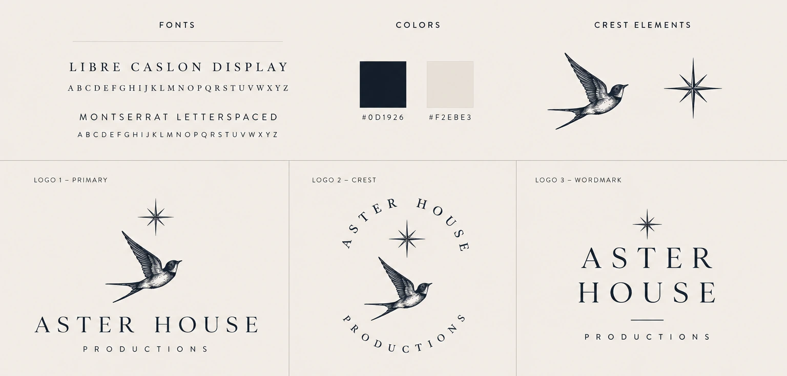
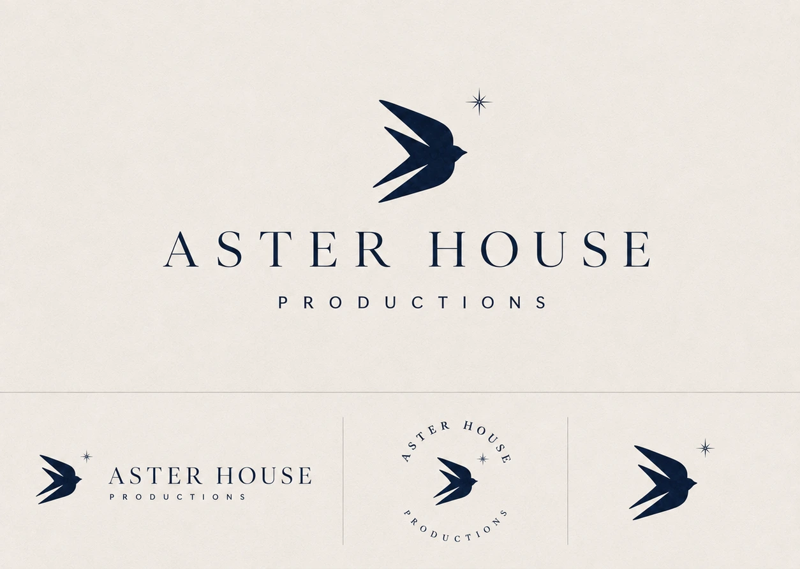
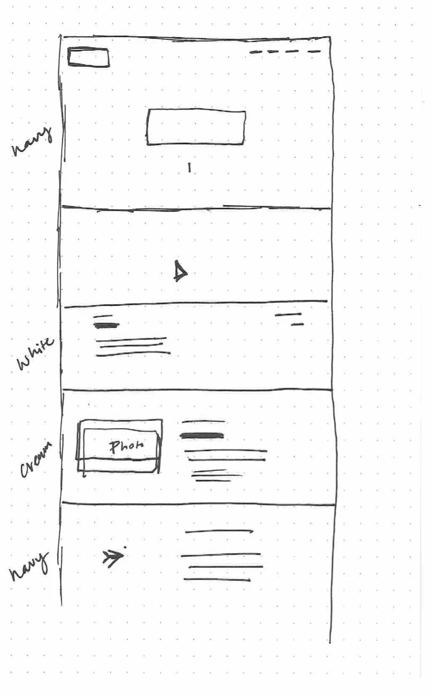
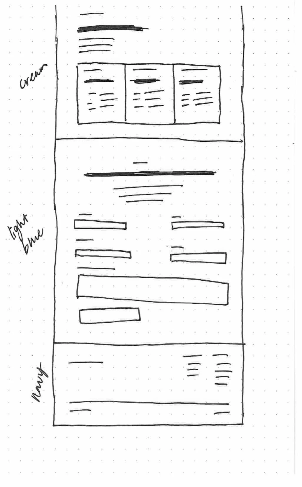
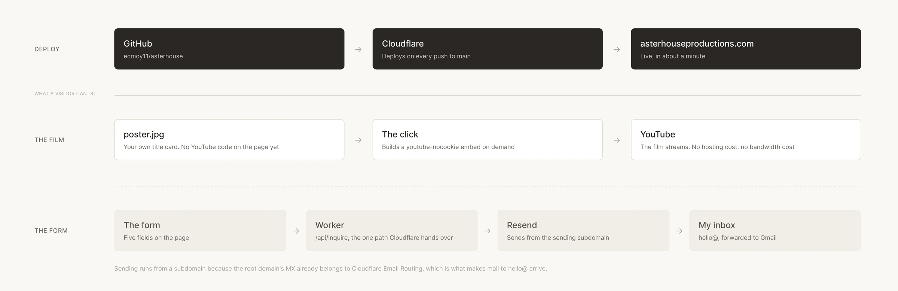

Overview
Aster House Productions is a solo wedding videography company, just starting out and needing somewhere to send people. She came to me with a name and nothing else. No identity, no site.
The rest of the brief was rough. She could not say what her style was. She had exactly one film to show. She did not want a price published anywhere. She had been sitting on the project for months, and she wanted all of it live by the end of the day.
So that is what we did. Identity, site, domain and a working inquiry form. It is live at asterhouseproductions.com, and the form on it sends real mail to a real inbox.
Being new was not the obstacle. Being new with nowhere to point people was.
She had been dabbling in photography and video for a while, and the inquiries had already started arriving on their own. People asked about wedding coverage and there was nowhere to send them. No page, nothing to answer with.
So she wanted a landing page that could take that weight. Somewhere to bring people in, and something that made the whole thing read as a real operation rather than a favor. Instagram is the long game and she wants to grow it the slow organic way, but that takes time she did not have while the inquiries kept coming.
She had also been fiddling with this for months. So we gave it a deadline instead of a scope: one day, and see how far we could get.
The name was already settled. Everything else, the identity, the type, the palette, the site, the domain, the form and the email routing, happened between morning and night.
The deadline did the useful thing deadlines do. It stopped this being a design project that could keep being improved and made it a thing that had to exist.
The objection, and the answer
There is an obvious objection to a site like this, which is that it has one film on it and no signature style. I decided the opposite of what you would expect. A signature style would be a lie right now. She is early, she is still playing, and with one film on the wall nobody is going to hire her for a look. So the site does not promise one. It stays universal on purpose, and it spends its effort proving the thing she can actually prove.
Aster House started in high school.
The name arrived before I did. My job was not to name the thing, it was to find out whether the name already held a system. It did.
In high school she had a photography brand called Emma Claire Photography, and she wanted to nod at that without using her own name again. She wanted something that could grow with her, and maybe one day grow past her. So she went at it through what the names mean. Emma is whole. Claire is clear and bright. Both of them keep landing on light, which is what photography and film are actually about.
Aster is Greek for star. A star is a small point of light inside something much larger.
The bird was the one thing she asked for outright. She has been obsessed with birds for years and wanted one in the mark. Wanting a bird is not a reason to have a bird, so it had to earn the space, and it did. Birds are observers. They belong to perspective, to movement, to seeing a familiar place from somewhere above it.
House is the part people skip past, and it is carrying the most weight. She is a multifaceted creative, design and photography and film, and Aster House is built to sit over all of it. A household name rather than a wedding film company, so the work can widen as she does without needing a rebrand.
It is also a promise about the day itself. When she shoots a wedding she wants to host, to make people comfortable enough to forget there is a camera in the room. Aster House sounded cozy and warm before anybody could explain why, and then it turned out there was a why.
Two rounds, which is what the day allowed
Round one went engraved. A drawn swallow with all its feathering, a compass star beside it, Libre Caslon Display over letterspaced Montserrat, and three lockups. She liked it. It felt high end, and high end was the thing she least wanted to lose.

Round one.
Click to see it closer
What she did not like was how much of it there was. The bird and the star were both carrying detail, and she wanted the mark to feel more like her. More grounded, simpler, without giving up that feel.
My read was narrower than that. She wanted both elements and I agreed she should have both, but in round one they were competing. Two illustrations sharing a frame, each asking to be looked at first. Round two stopped treating them as two things.

Round two.
Click to see it closer
The bird lost its feathering and became one silhouette, wings cut out of the negative space. The star shrank and moved into the notch above the upper wing, so it reads as part of the bird instead of a second object standing next to it. One mark, not two. That is the version on every surface now, from the favicon to the send button.
Light, perspective, keeping. The star, the bird, the house. Filmmaking sits exactly between the first two, and the third is a promise about what it feels like to work with her.
- Light
- The star
- Perspective
- The bird
- Keeping
- The house
The shapes were settled before anything got typed.


Click either sheet to see it closer
I still wireframe by hand. Dot paper, a pen, and the whole scroll drawn out before anything gets typed.
That drawing is what I handed Claude first. Not a mood board and not a reference site. The page in order, band by band, with the ground color written in the margin beside each one. Navy, white, cream, navy. Then cream, light blue, navy. The rhythm of the site was decided on paper, and the build was a translation of it.
Then I gave it the intent of each section, what that band was for and what it had to get across, and let it write the first pass of the copy. That is the part I would defend hardest. A blank page is expensive, and on a one day deadline I would rather spend my attention editing than staring.
What came back was a draft, not the site. From there it was refining: tightening lines, cutting what did not sound right, keeping what did.
The paper is why one day was possible. By the time anything got typed, the only open questions left were sentences.
Three colors, two typefaces, and three things that move.
Midnight navy, warm ivory and heirloom gold carry the brand. Underneath those I had a quieter family I liked just as much, spring water, sand, wood, and rather than pick between them I gave them different jobs. Navy and ivory are the spine, the part you remember. The neutrals are grounds, one per section, so the page moves through light without ever getting loud. Olive and blush did not make it. Cormorant Garamond sets the display type, Jost sets everything small.
The palette as shipped, in the order you meet it scrolling the site.
Gold never had to carry any reading. It is hairlines, list bullets and the scroll progress line, and nothing else. The page checks clean at AA everywhere.
I think a website is a full experience
Three things move. Each one is the brand doing work rather than decoration, and that is the only reason any of them stayed.
The hero is navy with light falling on it from above, so the first thing anyone sees is the name story rather than a logo.
It is the sentence from the name story made literal: a small point of light inside something much larger. It is also the only ornament in the hero, which is what lets it read as atmosphere instead of an effect.
Star, then the bird arriving to meet it, then the wordmark’s tracking settling. It waits on the font rather than on a timer.
The wordmark is the brand and the wordmark is a serif, so if the page paints before the font arrives the hero visibly reflows and the first thing anyone sees is the logo changing shape. A two second floor so it is not a flash, a four and a half second ceiling so a slow connection cannot trap anyone, and all of it off under reduced motion.
Click any of the three to see it bigger
On the whole site the mark moves exactly once, when someone sends an inquiry. The bird inside the send button lifts out of it and climbs away, and the confirmation holds back 700 milliseconds so it gets airborne first.
It climbs at about 45 degrees, because any shallower and it reads as flying sideways while nose up. I spent the motion at the one moment the site has a job. Everything before it is information.
I am not against detail. I am against detail that is not smooth.
Click the flap to see it bigger
I wanted the bird to actually flap. I had the whole thing in my head, a beautiful drifting motion as it left the button. I built the kit for it, two frames, one with the wing and one without, alternating every few hundred milliseconds.
I could not get it where it did not look gimmicky. I tried a couple of techniques and nothing felt smooth enough for me to push it.
The glide. It just looked better.
Every other project here is a concept. This one runs.
The part that makes it run is the part nobody sees. The film is on YouTube because that is what she already uses, and it loads only when someone clicks it, behind her own title card, so nothing third party touches the page until it is asked for.
The form posts to a Cloudflare Worker. The Worker checks the fields and hands the note to Resend, which mails it to her. Reply-to is set to the person who wrote it, so answering in Gmail writes back to the couple rather than into a void.

Click to see it closer
The interesting part is why her mail comes from a subdomain. Verifying a domain with Resend puts an MX record on it, and the MX record on the root domain already belongs to Cloudflare Email Routing, which is the thing forwarding hello@ into her inbox. Verify the root and I would have broken the inbox I was trying to fill. So sending happens from a send subdomain and receiving stays on the root. Three extra DNS records, and mail moves in both directions.
What it costs to load
13KB of gzipped HTML. No framework, no build step, no dependencies. First paint at 192 milliseconds, fully loaded at 230 on a warm cache, nine requests, two of which are her own photographs.
A human and machine build, and the rush is why.
Claude wrote the code. I led the art direction and the design, and the branding came out of that: the story, the bird, the palette, the type direction, and every call about what stayed and what went. The load screen and the bird leaving the button were both my ideas. The film is hers, shot on a cinema camera and camcorders and cut in Premiere.
- What the machine did
- Every line of the site’s code, the Worker and the mail pipeline, the vector production of the marks I specified, and the first pass of the copy.
- What I did
- The structure on paper, the identity, the palette and type, both motion ideas, the edit on every line, and every call about what stayed and what went.
Scale · Human–Machine Collaboration, Dubai Future Foundation
Where my own hours went was the prework, and then the pass at the end. The identity, two rounds of the mark until the bird and the star stopped competing. The structure drawn out on paper, band by band, with a ground color written against each one. The palette and the type. Both motion ideas. Then the edit on every line that came back, and the decisions about what did not survive.
The best version of this page is the site itself.
Everything above is running right now. Worth opening in a fresh tab rather than one you already have, because the load screen only plays on a cold load.
Live site Aster House Productions → asterhouseproductions.comIt did not need to be a hard thing.
Simple was the spec, not the compromise
It is fun to think about everything a site could do, and I could have kept adding to this one for a week. A landing page with one film on it is not built to carry that weight. Light and informational is what it was supposed to be, and staying there was the actual work.
The bottleneck was upstream of the work
She was not blocked on being able to shoot a wedding. She was blocked on having somewhere to send someone who asked. One is a craft problem and takes years. The other took a day, and it sat for months because it looked bigger from the outside than it was.
Not having a style is a position, not a gap
With one film up, promising a signature look would be a claim she cannot back. So the site stays universal on purpose and spends its credibility on care instead. That is a real answer to the obvious objection rather than a way around it.
Detail earns its place by being smooth
I like a site that feels like a full experience, and I kept two motion ideas that do. The one I cut was the one I wanted most, and it went because I could not get it past gimmicky. The standard is craft, not restraint.
What I would watch
Whether inquiries start arriving through the form. That is the one number that separates the site working from the people around her doing the work for it, and it is too early to have it. Which is the honest answer.
Where it goes next
There is one film on it today. As more come in, the films get their own page, the about section gets its own page, and the homepage keeps a short highlight instead of a single frame. The load screen is where a background video eventually goes.
None of that is why the site exists. It exists so somebody can ask her a question, and so that when they get here they can tell this matters. Clearly somebody cares. She put time into a site.
The client, for the record, was me. I would work with her again ;)
Aster House is my side hustle, and it is a place where my creative cup gets filled back up.
Next project Nav Health →